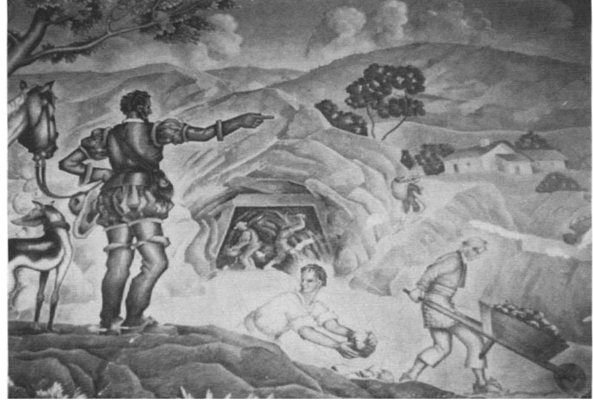

Demandas Económicas y Relaciones Étnicas
La economía colonial española dependía en gran medida de la explotación de la mano de obra nativa a través de instituciones como la encomienda y el repartimiento. La población indígena fue sometida a pagos de tributos, trabajos forzados y otras formas de extracción económica.
"La explotación implacable de la capacidad de trabajo de los nativos formó la base de la economía colonial española y fue el corazón de cualquier enriquecimiento material que se acumuló tanto para la Corona como para los españoles individuales durante el curso de los tres siglos de dominio de España en gran parte del Nuevo Mundo." (Lovell, Conquista y Supervivencia en la Guatemala Colonial, 95)
La disminución de la población nativa debido a las enfermedades y los abusos condujo a cambios en la economía colonial, como el surgimiento del sistema de haciendas y el uso del peonaje por deudas para asegurar una fuerza laboral estable.

Trabajo forzado en la Guatemala colonial.